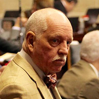
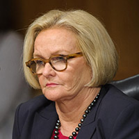
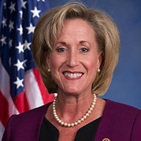
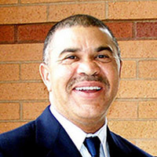

The Companies & Their Consultants
Republic Services

Subsidiaries own the neighboring West Lake and Bridgeton landfills. Republic is among the nation’s largest waste-management companies. It became the parent company for the owners of the West Lake and Bridgeton landfills when it bought larger competitor Allied Waste Industries in 2008. Republic assumed at the time that the EPA would stick by its earlier decision to cap West Lake, but otherwise leave the radioactive waste alone. Republic shares liability with Exelon Corp. and the federal Department of Energy. Republic has donated at least $181,000 to state officials, legislators and local officials since 2012.
Exelon Corp
This Chicago-based energy corporation is the nation’s largest operator of nuclear power plants. It was created 15 years ago by mergers of other companies. Its portfolio of companies used to include Cotter Corp., a uranium processing operation that is blamed for some of the radioactive waste at West Lake. Exelon agreed to take on Cotter’s liability for West Lake when the company was sold in 2000. Previously in the background, Exelon has begun to take on a more public role as it contends more of the liability belongs to the federal government.
Andy Blunt
The son of U.S. Sen. Roy Blunt, R-Mo., is a lobbyist for Exelon. Andy Blunt has become a go-to lobbyist in Jefferson City, with a stable of 38 clients that also includes Ameren and, most recently, the University of Missouri. Blunt is a lawyer and a partner in the Jefferson City firm of Schreimann, Rackers, Francka & Blunt, LLC. Blunt declined to comment. But those close to him say his chief job for Exelon is to keep it informed of any West Lake-related chatter in Jefferson City. So far, there’s been no related state legislation for him to lobby for or against.
Richard Callow
He’s a spokesman-consultant for Republic, at least when it comes to the Bridgeton and West Lake landfills. Callow is among the region’s top Democratic and corporate consultants, particularly in public relations. His longstanding clients include St. Louis Mayor Francis Slay, who generally has relied on Callow to oversee the mayor’s political operations.
State & Regional Officials
Attorney General Chris Koster
The Missouri attorney general – a Democrat running for governor in 2016 – has been particularly active in the landfill controversy for several years, holding news conferences to focus on complaints about odor, water and soil contamination, and the underground fire. His office filed a lawsuit in 2013 against Republic. Some fellow Democrats privately accuse him of scaring residents. His critics point to the hefty campaign donations from personal-injury lawyers and law firms. He’s collected at least $425,000 from the Alton-based law firm of Simmons, Hanly, Conroy, LLC – which represented some of the residents in the now-settled lawsuit against entities controlled by Republic.
State Sen. Maria Chappelle-Nadal

A Democrat, her Senate district includes the landfills. She was among the marquee figures at the height of the Ferguson unrest. She’s now become an outspoken advocate of the residents’ effort to force removal of the radioactive material at West Lake. She’s also an outspoken critic of Gov. Jay Nixon – who she lambasted over Ferguson – and St. Louis County Executive Steve Stenger, fellow Democrats who she has accused of ignoring the landfill controversy. Chappelle-Nadal has leveled the same accusations against U.S. Rep. William Lacy Clay. She has filed papers to oppose him in next summer’s Democratic primary. She ran afoul of some area Democrats when she endorsed Republican Rick Stream in 2014 for St. Louis County executive.
County Executive Steve Stenger
The Democrat from south St. Louis County just took office in January. He says his administration has paid close attention to the landfill controversy, with a staff person – or himself -- attending most of the public gatherings about the landfills. But he’s come under fire from Chappelle-Nadal, who publicly accused him of not doing enough. (She had endorsed his Republican rival in 2014.) Stenger has resisted calls to declare a county “state of emergency,” saying that wouldn’t do anything.
State Rep. Bill Otto
A Democrat from Maryland Heights, Otto’s district includes the landfills. He’s been advocating for several years for the U.S. Army Corps of Engineers to take jurisdiction over the landfills. Otto is running for Congress against U.S. Rep. Ann Wagner, R-Ballwin.
Congress
U.S. Sen. Claire McCaskill
Even though she is a leader in the Missouri Democratic Party, she and Republican Roy Blunt have worked together on Bridgeton/West Lake landfill issues. They wrote a joint letter in 2014 calling for the Corps of Engineers to take over jurisdiction. The two now are cosponsoring a bill to do just that. In political circles, there’s been speculation about her opinion of Koster’s actions on the issue.
U.S. Sen. Roy Blunt
A Republican from southwest Missouri, Blunt is seeking re-election in 2016. His involvement in the landfill controversy has increased in the last couple years, with him recently saying he’s simply seeking the best and quickest way to get the matter resolved. Blunt has been particularly critical of the EPA, which he also has regularly attacked on other issues. He has not commented on his son’s role as an Exelon lobbyist, although Andy Blunt is his father’s campaign chairman.
U.S. Rep. Ann Wagner
A Republican, Wagner is a rising star in the GOP-controlled House. She’s seeking re-election in 2016, and is widely seen as a possible rival to McCaskill when the Senate seat is on the ballot in 2018. Wagner shares the landfill issue with fellow Rep. William Lacy Clay. Her 2nd District includes the Bridgeton landfill, officially under state control, while Clay’s includes West Lake.
U.S. Rep. William Lacy Clay
A Democrat, he or his father has held the 1st District seat for almost 50 years. Clay’s district includes West Lake, which houses the radioactive material. (During the tenure of William L. Clay Sr., both landfills were in the 2nd District.) The current Congressman Clay has called for years for the Army Corps of Engineers to take over the West Lake site. He and Wagner are cosponsoring the House version of the bill to shift the landfill jurisdiction to the Corps, away from the EPA.
Activist Groups
Labor
Some unions, notably the Teamsters and the St. Louis Building and Construction Trades Council, are actively involved. Republic Services signed an agreement with the council last year to require that any remedial work be done by union contractors. The council’s executive secretary-treasurer, Jeff Aboussie, has publicly supported the EPA’s earlier plan to cap the radioactive waste and leave it at West Lake. The Teamsters have been picketing some Republic sites because of various disputes.
JustMomsSTL
This nonprofit group was formed by residents near the landfill and has a huge following on social media. It has become a major voice in pressing public officials to take a stand on the landfills. The group has highlighted what it views as the dangers from the Bridgeton landfill’s odor issues and the underground fire, as well as West Lake’s radioactive waste. The group wants the radioactive waste removed.